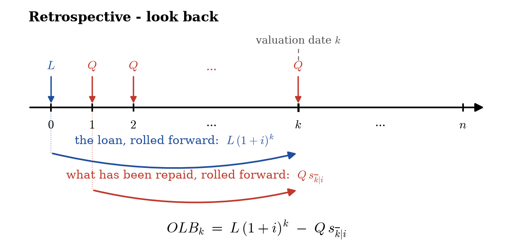
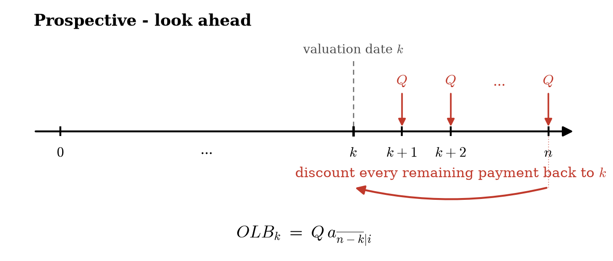
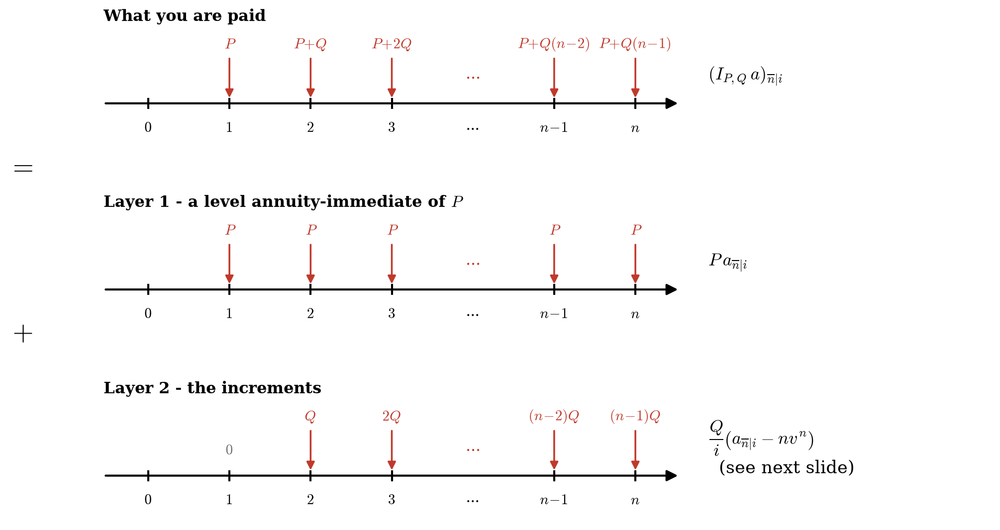
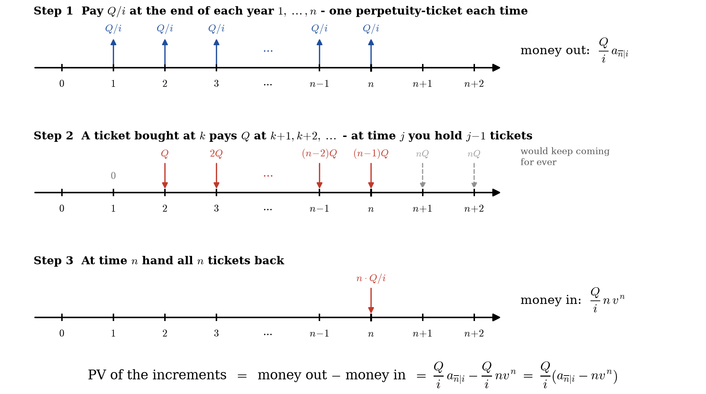
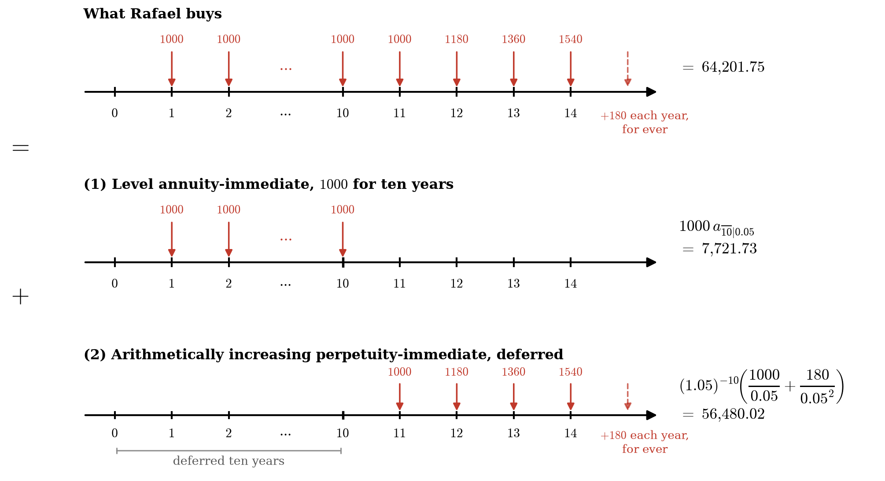

An \(n \text{-year}\) basic annuity-immediate pays \(1\) at times \(1, 2, 3, \dots, n\).
Those payments are worth (at time \(0\)):
When we have compound interest, then \(v(t) = (1 + i)^{-t} = v^t\), and the present value becomes
The accumulated value at the time of the last payment of all the payments made by a basic annuity-immediate lasting \(n\) periods is denoted as \(s_{\overline{n}|}\), i.e.,
When \(a(n) = (1 + i)^n\),
Candace wishes to buy a new car. Her budget allows her to make monthly payments of \(500\), and she has saved \(1,800\) for a down payment. Candace qualifies for a 36-month auto loan which has a nominal interest rate of \(4.8\%\) convertible monthly. How expensive a car can Candace buy?
Solution
Seth wishes to borrow \(4,400\) so he can pay his tuition. He qualifies for a two-year loan with a monthly effective interest rate of \(0.25\%\) and level payments. Find the amount of Seth's monthly payments under this loan.
Solution
Read: Algorithm 3.2.14 and Example 3.2.15.
Hyun wishes to contribute \(100\) at the end of each month to his savings account until the account has a balance of at least \(3,000\), at which time he will buy his grandmother's piano. Hyun's savings account has an annual interest rate of \(5.4\%\) convertible monthly. How many months it will take Hyun to accumulate the needed money?
Solution
Why?
Mathematically,
Intuitive interpretation?
Consider a loan of amount \(L\) to be repaid at the end of \(n\) periods, and let \(i\) be the effective interest rate per period.
Then we can setup a repayment schedule as a level annuity-immediate with the level payment
This time we repay the loan \(L\) as follows:
In order to be able to repay the entire principal at the end of \(n\) periods, we should make a level payment of \(L/s_{\overline{n}|i}\) at the end of every period.
Together with the interest \(L\cdot i\) paid at the end of every period, we totally pay
The two payments \(Q_1\) and \(Q_2\) should be equal, we arrive at the desired equality.
An \(n \text{-year}\) basic annuity-due pays \(1\) at times \(0, 1, 2, \dots, n-1\). Those payments are worth (at time \(0\)):
When we have compound interest, then \(v(t) = (1 + i)^{-t} = v^t\), and the present value becomes
The accumulated value at the time \(n\) of all the payments made by a basic annuity-due lasting \(n\) periods is denoted as \(\ddot{s}_{\overline{n}|}\), i.e.,
When \(a(n) = (1 + i)^n\),
The most basic relationship is obtained through discounting
The other basic relationship is obtained by "shifting the time" by one
During 1998, Omar had a dividend payment of \(100\) directly deposited to his savings account on the first day of each month. Find the accumulated value of these payments at the end of the year if his savings account had a nominal discount rate of \(4.8\%\) payable monthly.
Solution
Recall \(\displaystyle a_{\overline{n}|i} = \frac{1 - v^n}{i}, \quad \ddot{a}_{\overline{n}|i} = \frac{1 - v^n}{d}\).
As we take the limit as \(n\to\infty\), we
called the present value of a basic perpetuity-immediate; and
called the present value of a basic perpetuity-due.
It is quite straightforward that \(a_{\overline{\infty}|} = \ddot{a}_{\overline{\infty}|}-1\).
Norman wishes to leave an inheritance to three charities. The total inheritance is a series of level payments at the beginning of each year forever. He wishes charities \(A\) and \(B\) (which support medical research) to share the payments equally for ten years, and then all payments revert to charity \(C\) (that helps needy children). If the shares received by all three charities have the same value at the time of the bequest, find the annual effective interest rate \(i\).
Let \(P\) denote the payment at the beginning of each year.
Then the charity \(A\) has the value at time \(0\):
and the charity \(C\) has the value at time \(0\): \(\displaystyle \frac{P}{d} v^{10}\).
Since all charities have the same value at time \(0\), we have
which give \(v^{10}=1/3\), and thus \(i = v^{-1} -1 = 0.116123174\).
Self-study, work on Example 3.5.1 - 4.
In particular, the idea of imaginary payments.
A loan of amount L is to be repaid at the end of n time periods by payments at the end of each period. These payments are to be level except for a slightly reduced final payment if need be.
We now consider the important question of how to find the loan balanace at an intermediate date between the loan origination date and the date of the final payment.
If \(OLB_k\) denotes the loan-balance at the end of \(k\) payment period, just after any time \(k\) payment, and \(Q\) denotes the amount of each of the first \(k\) payments, then
In particular, \(a(t) = (1 + i)^t\), then
This method of "look back", i.e., of looking how much one has repaid until time \(k\) when determining the loan-balance is called the retrospective method.

A loan is being repaid with \(10\) payments of \(2,000\) each followed by \(10\) payments of \(1,000\) each all at the end of each half-year. Assume that the nominal rate of interest convertible semiannually equals \(i^{(2)} = 10\%\).
Find the outstanding loan balance immediately after the payment made at the end of the fifth year.
Note: This is a nonlevel annuity problem, and we discuss more in Sec 3.8 and 3.9.
Recall the formula
and let the basic time unit be a half-year.
The end of the fifth year is then \(k = 10\). So we have \(k = 10, Q = 2000, i = 0.05\), but the loan amount \(L\) is to be determined.
In fact,
So,
Note:
where \(v = 1/(1 + 0.05)\).
Again, please read Example 3.5.1, 3.5.2.
Contrary to the retrospective method, the propspective method is based on "looking into the future", i.e., evaluating the value of remaining payments.
If \(a(t) = (1 +i)^t\), we have
where \(Q\) denotes the level amount of all but the last payment and \(R\) the amount in the last payment.
If \(Q = R\), then the equation is reduced to

A loan is being repaid with \(20\) annual payments of \(1000\) each. At the time of the fifth payment, the borrow wishes to repay an extra \(2,000\) and then repay the balance using level annual payments over the next 12 years.
Note that due to the extra \(2000\) repaid at time \(5\), the level payments that are supposed to be made over those \(12\) years need to be revised. Assume that the effective rate of interest is \(9\%\).
Find the amount of the revised annual payment.
Using the prospective method, the balance of the loan after the first \(5\) years is
Thus, after the extra \(2,000\) are repaid, the outstanding loan balance becomes \(6,060.69\).
Denote \(X\) by the revised level payment amount, then
The answer depends on the context:
Read: Example 3.6.5-7, and 3.6.9-10.
The amount of principal paid in any time period \([m, n]\) is
The amount of interest paid in any time period \([m, n]\) is obtained by subtracting the amount of principal paid from the total amount paid during the period \([m, n]\).
A loan is to be repaid by annual payments \(P\) at the end of each year for \(10\) years. You are given the following:
(1) The amount of principal paid over the first \(3\) years is \(290.35\).
(2) The amount of principal paid over the last \(3\) years is \(408.55\).
Find the total amount of interest paid during the loan term.
Let \(L\) denote the loan amount, and let \(I\) denote the total amount of interest paid. Then,
The amount of principal paid over the first \(3\) years is
The amount of principal paid over the last \(3\) years is
Dividing the above two equation, we have \(\displaystyle v^7 = \frac{290.35}{408.55} \Rightarrow i = 0.05\).
Now let's find \(P\) and \(L\).
Using the condition (2) again, we get
Hence,
Finally, the amount of interest paid is
Assume that an annuity-immediate provides \(20\) annual payments: the first payment being \(1,000\). The payments increase in such a way that each payment is \(4\%\) greater than the preceding payment.
Find the present value of this annuity at an annual effective rate of interest of \(7\%\).
Answer
How?
Let \(n\) denote the number of periods. For simplicity, assume that the first payment is equal to \(1\), and let all subsequent payments increase in geometric progression with the common ratio equal to \(1 + g\).
Then, the present value of this non-level annuity equals
Let us revisit the formula previously,
Define \(j = (i - g)/(1 + g)\). Then, we can express the above present value as
In particular, if \(i = g\), i.e., the increase in the payment exactly offsets the interest rate, then the present value becomes
You purchase an annuity-immediate with 25 annual payments. The first payment is \(800\) and the payments increase by \(3\%\) each year. Using an annual interest rate of \(7\%\), calculate the present value of this annuity.
Solution
Warning: Keep as many decimals as possible for \(j\).
You purchase an annuity-immediate with 25 annual payments. The first payment is \(800\) and the payments increase by \(3\%\) each year. Using an annual interest rate of \(1\%\), calculate the present value of this annuity.
Solution
You purchase an annuity-immediate with 25 annual payments. The first payment is \(800\) and the payments increase by \(3\%\) each year. Using an annual interest rate of \(3\%\), calculate the present value of this annuity.
Solution
If \(g = i\), in general we have
So in this example, the present value is
The present value of a perpetuity which pays \(P\) at time 1 and \(P(1 + g)^{k-1}\) at time \(k \ge 1\) is:
If \(g \ge i\), the present value is infinite because the future payments will be worth at least as much as the earlier payments.
Read: Example 3.8.3
Consider an annuity lasting \(n\) periods with a payment of \(P + Q(j-1)\) at the end of the \(j^{\text{th}}\) period, then
Multiplying by \(v^n\),
How? Read page 158-160 — or see the two pictures on the next slides.


When \(P = Q = 1\), i.e, the sequence of payments is \(1, 2, \dots, n\), we can simply drop the \(P\) and \(Q\),
Again multiplying by \(v^n\), \(\displaystyle (Ia)_{\overline{n}|i} = \frac{\ddot{a}_{\overline{n}|i} - n v^n}{i}\).
When \(P = n\) and \(Q = -1\), i.e., the sequence of payments is \(n, n-1, \dots, 1\), we modify the notation to stress that the annuity is decreasing and we have
Susan receives an annuity for her eighteenth birthday. The annuity pays \(2,000\) on her nineteenth birthday and then has an annual payment on each of her birthdays through her thirty-fifth birthday. Each year the payments increase by \(500\). Find the value of the annuity on Susan's eighteenth birthday, assuming the annual effective rate of interest is \(4.2\%\).
Solution
The desired value is
Read: Example 3.9.9
Related formulas are available for annuities-due, most of which simply replace \(i\) with \(d\):
Taking the limit of \((I_{P, Q}a)_{\overline{n}|i}\) as \(n\to \infty\), we find
and
Rafael purchases a perpetuity-immediate. The perpetuity pays \(1,000\) at the end of each of the first eleven years and then has payments that increase by \(180\) each year. So, the payment at time 11 is \(1,000\), and the payment at time 12 is \(1,180\). The purchase price was determined using a \(5\%\) annual effective interest rate. Find Rafael's purchase price.
This perpetuity consists of:
(1) A level annuity-immediate paying \(1,000\) for ten years. Its present value (at the time of purchase) is \(1000 a_{\overline{10}|0.05} = 7721.73\).
(2) A deferred arithmetically increasing perpetuity-immediate. Its present value is
So, the purchase price is \(7721.73+56480.02=64201.75\).

Recall that \(\displaystyle a_{\overline{n}|i} = \frac{1 - v^n}{i}\).
In fact, we can define \(\displaystyle a_{\overline{r}|i} = \frac{1 - v^r}{i}\quad \text{for } \forall r \in \mathbb{R}\).
But how does this arise?
Suppose we have the following equation
We can solve it for \(r\) and obtain
However, the solution \(r\) might NOT be an integer. So, how can we make the payments schedule?
Let \(r = n + f\), where \(n\) is an integer and \(0\le f<1\), so we rewrite
Recall \(\displaystyle L = Q a_{\overline{n}|i} + Q v^r \left( \frac{(1 + i)^f - 1}{i} \right)\).
We can schedule total of \(n+1\) payments as follows: make \(n\) payments of \(Q\) at times \(1, 2, \dots, n\), and make a final payment of
at time \(n+1\).
This \((n+1)\text{-st}\) payment is called a drop payment.
Recall \(\displaystyle L = Q a_{\overline{n}|i} + Q v^r \left( \frac{(1 + i)^f - 1}{i} \right)\).
We can also schedule total of \(n\) payments as follows: make \(n-1\) payments of \(Q\) at times \(1, 2, \dots, n-1\), and make a final payment of
at time \(n\).
This one-time larger payment is called a balloon payment.
Jamaar borrows \(9,600\) from Friendly Financing in order to purchase a car. The account representative who handles Jamaar's loan application determines that Jamaar can afford monthly payments of \(345\). Moreover, the nominal interest rate convertible monthly on Jamaar's loan will be \(5.4\%\).
(a) If the Friendly account representative arranges the loan so that there are \(N\) end-of-month payments of \(345\), followed by a drop payment, find \(N\) and the amount of the drop payment?
(b) If the loan is structured so that it has \((N - 1)\) level monthly payments of \(345\), followed by a balloon payment, find the amount of the balloon payment. Here, \(N\) is as in part (a).
(c) If the loan has twenty-three level payments of \(345\), followed by a larger final payment at the end of the 24th month, find the amount of the final payment. This final payment is also called a balloon payment.
(a) If the Friendly account representative arranges the loan so that there are \(N\) end-of-month payments of \(345\), followed by a drop payment, find \(N\) and the amount of the drop payment?
(a) With \(L = 9600, Q = 345\) and the monthly interest rate \(i = 0.054/12=0.0045\), we have
Therefore, there \(N= 29\) level payments of \(345\) followed by the drop payment \(X\) satisfying the equation:
which gives us \(X = 274.64\).
(b) If the loan is structured so that it has \((N - 1)\) level monthly payments of \(345\), followed by a balloon payment, find the amount of the balloon payment. Here, \(N\) is as in part (a).
Let \(Y\) be the amount of the balloon payment, then
which gives \(Y = 618.41\).
(c) If the loan has twenty-three level payments of \(345\), followed by a larger final payment at the end of the 24th month, find the amount of the final payment. This final payment is also called a balloon payment.
Let \(Z\) be the last payment, then
which gives \(Z = 2314.30\).
Assume that we have compound interest with the effective interest rate per interest period equal to \(i\), and the equivalent constant force of interest is \(\delta\).
Consider the following continuous annuity:
Suppose money is paid — or withdrawn — continuously at a level rate of \(R\) per interest period for \(n\) interest periods, and the force of interest is a constant \(\delta\).
Then the present value is \(\displaystyle R\,\bar{a}_{\overline{n}|i} = R\,\frac{1 - e^{-\delta n}}{\delta}\), and the accumulated value is \(\displaystyle R\,\bar{s}_{\overline{n}|i} = R\,\frac{e^{\delta n} - 1}{\delta}\).
Those two are the whole of the level case.
Everything else in this section is about what to do when \(\delta\) is not constant — then you are back to \(\int_0^n f(t)\,v(t)\,dt\).
Martin deposits \(12,000\) in a savings account with a discount rate of \(10\%\) convertible quarterly. He leaves his money there to accumulate for fifteen years, then moves it to a fund accumulating at \(8\%\) per annum convertible continuously.
Starting at time \(15\), money is withdrawn from the new fund continuously at a rate of \(6,000\) per annum.
How long will Martin's money last?
So with \(T\) the time until the fund is exhausted,
Hence \(20184.38 = 75000\,e^{-0.08T}\), so \(\displaystyle T = \frac{\ln(20184.38/75000)}{-0.08} = 16.41\).
Martin's money lasts about \(16.41 + 15 = 31.41\) years from the original deposit.
Find the constant force of interest \(\delta\) at which \(\displaystyle \bar{s}_{\overline{20}|} = 3 \cdot \bar{s}_{\overline{10}|}\).
Solution
Recall that \(\displaystyle \bar{s}_{\overline{n}|i} = \frac{e^{\delta n} - 1}{\delta}\).
We have
or equivalent, \(\displaystyle e^{20\delta} - 3 e^{10\delta} + 2 = 0\).
Solving the equation for \(\delta\), we obtain \(\delta= \ln(2)/10 = 0.0693\).
Consider the following continuous annuity:
Let \(v(t)\) denote the general discount function.
Let us consider the basic continuous annuity, i.e., the annuity that pays at the unit rate at all times.
Then, the present value of such an annuity with length \(n\) equals
We still denote this value by \(\bar{a}_{\overline{n}|}\).
In the special case of compound interest, the above formula collapses to the one already familiar to us from the compound interest set-up. You can verify this through simple integration…
Let \(f(t)\) be a continuous function which represents the rate of payments of a continuous annuity on the time interval \([0,n]\).
Then, the present value of this annuity can be obtained as
An annuity is payable continuously for ten years. The rate of payment at time \(t\) is \(t^2\) per year. Assume there is a constant force of interest \(\delta = 0.04\).
Find the present value of the annuity.
Here \(f(t) = t^2\), and since \(\delta = 0.04\) is constant, \(v(t) = e^{-0.04t}\). So the present value is
Integrating by parts twice — or by the tabular method — an antiderivative of \(t^2 e^{-0.04t}\) is
Evaluating it from \(0\) to \(10\) gives \(247.70\).
Money is paid continuously at a level rate of \(100\) per year for eight years. The force of interest at time \(t\) is
Find the present value. (Note \(\bar{a}_{\overline{n}|}\) is not available — it assumes a constant \(\delta\).)
Step 1. Build the discount function, as in §1.11:
Step 2. Integrate \(f(t)\,v(t)\) with \(f(t) = 100\):
Two steps, and the second one is the same integral as always. Only Step 1 is new.
In all three the set-up is the same, \(\displaystyle \int_0^n f(t)\,v(t)\,dt\). Only how much of it you can shortcut changes.
The illustrations below use the BA II Plus. The BA II Plus Professional has the same keys.
| Register | Meaning |
|---|---|
| N | number of periods |
| I/Y | interest rate per period, as a percent |
| PV | value at time \(0\) |
| PMT | the level payment |
| FV | value at time \(N\) |
Behind them is one equation — the one you already know:
Enter any four, then press CPT and the fifth.
The book: I/Y is interest rate per year, P/Y payments per year, C/Y conversion periods per year.
P/Y \(=\) C/Y \(= 1\) and type that rate as a percentage.2ND P/Y 1 ENTER 2ND QUIT |
P/Y fills C/Y too, so there is no second number |
| Press | What it does |
|---|---|
2ND FORMAT 9 ENTER 2ND QUIT |
nine decimal places. The screen reads DEC \(=\) while it waits for the digit |
2ND BGN |
shows END or BGN. END is an annuity-immediate, BGN an annuity-due. 2ND SET toggles, 2ND QUIT leaves |
2ND CLR TVM |
wipes N I/Y PV PMT FV — do this between problems |
Why nine? The default is two. Vaaler §0.3: the authors "most often prefer to keep their calculators with 9-formatting so that an answer is displayed with maximal possible accuracy."
PMT \(= -500\): key 5 0 0 +/- PMT.ERROR 5. The commonest cause is a sign entered the wrong way round.Candace: \(36\) monthly payments of \(500\) at \(0.4\%\) per month, plus \(1,800\) down. By hand: \(500\,a_{\overline{36}|0.004} = 16732.94\), car \(= 18532.94\).
| Press | |
|---|---|
2ND CLR TVM |
clear |
3 6 N |
\(36\) months |
. 4 I/Y |
\(0.4\%\) per month |
5 0 0 +/- PMT |
she pays \(500\) |
0 FV |
nothing left at the end |
CPT PV |
PV = 16,732.937940 |
Then + 1 8 0 0 = \(\;\Rightarrow\; 18532.94\).
Seth borrows \(4,400\) for two years at \(0.25\%\) per month. By hand: \(4400 = Q\,a_{\overline{24}|0.0025}\), so \(Q = 189.12\).
| Press | |
|---|---|
2ND CLR TVM |
clear |
2 4 N |
\(24\) months |
. 2 5 I/Y |
\(0.25\%\) per month |
4 4 0 0 PV |
he receives \(4,400\) |
0 FV |
loan fully repaid |
CPT PMT |
PMT = -189.117333 |
Negative because he pays it out; the last payment is still reduced by \(0.07\).
Leave the registers exactly where they are and ask a different question.
| Press | |
|---|---|
CPT I/Y |
I/Y = 0.25 |
That is the whole point of the worksheet: the same five numbers, any one of them unknown.
⚠️ Do not retype the rounded \(189.12\) first. If you do, the calculator returns \(0.250114\) — it is answering a slightly different question than the one you meant.
Hyun saves \(100\) monthly at \(5.4\%\) convertible monthly until he has \(3,000\). By hand: smallest \(n\) with \(100\,s_{\overline{n}|0.0045} \ge 3000\), so \(n \ge 28.2\) and \(n = 29\).
| Press | |
|---|---|
2ND CLR TVM |
clear |
. 4 5 I/Y |
\(0.45\%\) per month |
0 PV |
he starts from nothing |
1 0 0 +/- PMT |
he pays in \(100\) |
3 0 0 0 FV |
he wants \(3,000\) back |
CPT N |
N = 28.203858 |
It gives \(28.203858\); you still have to say \(29\). It computes, it does not decide.
Omar's \(100\) arrives on the first day of each month for a year, \(d^{(12)} = 4.8\%\). By hand: monthly interest \(\frac{0.004}{1-0.004} = \frac{4}{996}\), and \(100\,\ddot{s}_{\overline{12}|} = 1231.79\).
| Press | |
|---|---|
2ND BGN 2ND SET 2ND QUIT |
display now shows BGN |
2ND CLR TVM |
clear |
. 0 0 4 ÷ . 9 9 6 × 1 0 0 = I/Y |
\(0.401606426\%\) per month |
1 2 N 0 PV |
twelve months, nothing to start |
1 0 0 +/- PMT |
\(100\) paid in |
CPT FV |
FV = 1,231.791250 |
🔴 Put it back afterwards — a calculator left in BGN is the commonest wrong answer.
The calculator replaces the arithmetic, never the set-up.
Which is exactly why we learned it in this order.